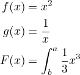
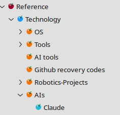

Ideas
basic fomating of tables.
Make a plan to implement the following:
I'd like to add basic formating of the rich tables. Various thickness of border, include zero thickness, ie. no border. Color of border.
and possibility of changing the background color of all the table, individual cells, columns or rows.
I'm not sure what would be the best way of choosing the background color for table, cells, columns or rows.
Maybe select a set of cells and just call the Table Properties, in which case they affects only these cells.
But you need to be able to select cells. How to do that? currently I can't select cells.
Then in Table Properties:
- remove light weight interface and rich table tick boxes. Assume, rich tables can't be converted.
- Add boder thickness and colors
- Add cell background colours.
If you know a better approach suggest it. Take inspiration on how is done in libreoffice write tables.
drawing canvases.
zoom of the Node affecting images too, not just text.

 this is one text that expands the column this is one text that expands the column | text inside the table | |
|---|---|---|
| this is something very interesting until you realise that is not always the same thing. | ||
 |  |
| ddddf |
// Step Back for the Current Node, if Possible
void CtActions::requested_step_back()
{
CtTreeIter currTreeIter = _pCtMainWin->curr_tree_iter();
if (not currTreeIter) {
spdlog::debug("Undo: No current tree iter, returning");
return;
}
if (not _is_curr_node_not_read_only_or_error()) {
spdlog::debug("Undo: Current node is read-only or error");
return;
}
auto pBridge = _pCtMainWin->get_command_bridge();
if (pBridge && pBridge->canUndo()) {
pBridge->undo();
_pCtMainWin->update_window_save_needed(CtSaveNeededUpdType::nbuf);
// Note: Menu updates happen on-demand via signal_show_menu()
} else {
spdlog::debug("Undo: No undo available (canUndo=false)");
}
auto pBridge = _pCtMainWin->get_command_bridge();
if (pBridge && pBridge->canUndo()) {
pBridge->undo();
_pCtMainWin->update_window_save_needed(CtSaveNeededUpdType::nbuf);
// Note: Menu updates happen on-demand via signal_show_menu()
} else {
spdlog::debug("Undo: No undo available (canUndo=false)");
}
auto pBridge = _pCtMainWin->get_command_bridge();
if (pBridge && pBridge->canUndo()) {
pBridge->undo();
_pCtMainWin->update_window_save_needed(CtSaveNeededUpdType::nbuf);
// Note: Menu updates happen on-demand via signal_show_menu()
} else {
spdlog::debug("Undo: No undo available (canUndo=false)");
}
}
| x | x | x | ||
|---|---|---|---|---|
| x | x | x | ||
| x | x | |||
| x , is thisfsdfsdf sdf sd sfd fdsf sdfd sfd ds fs sf sdfs fsd df sf fs fds df ds fsdf sdf fsdfs dfsfsf | x | |||
| x | x |